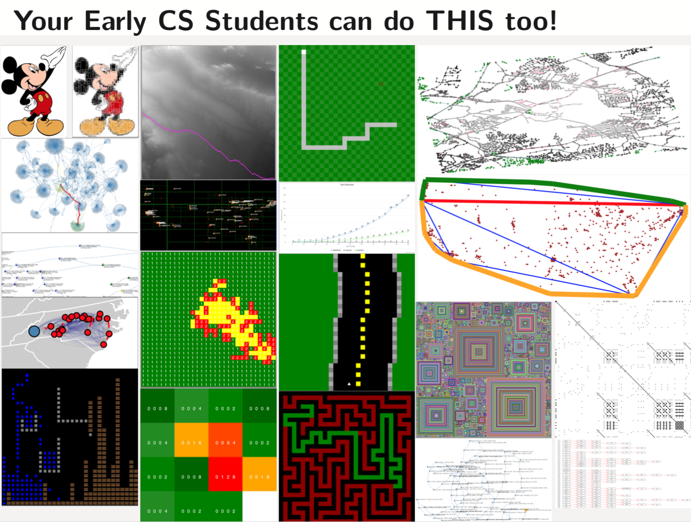

Summer 2022 Workshop: Real World Data, Visualizations and Engaging Assignments Using BRIDGES
Are you looking for ways to spice up your CS1, CS2, Data Structures, or Algorithm
Analysis course? Come to our BRIDGES training workshops at UNC Charlotte this summer!
BRIDGES provides a toolkit that lets you easily bring in interesting and engaging
real-world data into your course assignments, and allows your students to build
simple games, create data structure visualizations, and assess algorithm performance. BRIDGES can show the relevance of computing in these early foundational courses by connecting
it with real-world problems and scenarios. See the following image and links to more detailed
information on BRIDGES and examples

Links for more information on BRIDGES and Interactive Examples
We will conduct 2 BRIDGES Training Workshops during the Summer of 2022. The 3 day
workshop will enable participants to learn about current practices in course
design, assessment of their current course, and enable revising their course to
integrate BRIDGES into their curriculum. At the end of the workshop, the revised
course is expected to ready for delivery in the Fall semester.
Dates
Workshop 1: May 23-25
Workshop 2: July 25-27
Location, Stipends
The workshops will be conducted at the University of North Carolina at Charlotte.
Participants will be supported by stipends to cover their travel expenses.
Application
If you are interested, apply at this
Link for our workshop.
Additional Information
If you have additional questions, feel free to reach out to us